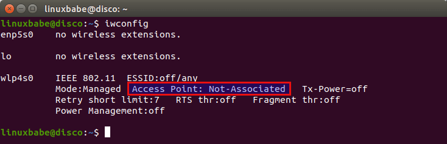
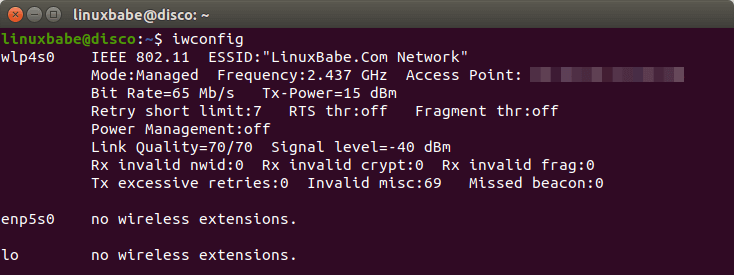
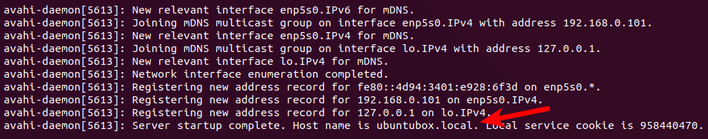

Wi Fi on Ubuntu Server
Wi-Fi on Ubuntu Server
In this tutorial, we are going to learn how to connect to Wi-Fi network from the command line on Ubuntu 18.04/20.04 server and desktop using wpa_supplicant. In a modern home wireless network, communications are protected with WPA-PSK (pre-shared key) as opposed to WPA-Enterprise, which is designed for enterprise networks. WPA-PSK is also known as WPA-Personal. wpa_supplicant is an implementation of the WPA supplicant component. A supplicant in wireless LAN is client software installed on end-user’s computer that needs to be authenticated in order to join a network.
Step 1: Find The Name of Your Wireless Interface And Wireless Network
Run iwconfig command to find the name of your wireless interface.
iwconfig
wlan0 used to be a common name for wireless network interface on Linux systems without Systemd. Because Ubuntu uses Systemd, you are going to find that your wireless network interface is named something like wlp4s0. You can also see that it’s not associated with any access point right now.

If your wireless interface isn’t shown, perhaps you need to bring it up with the following command.
sudo ifconfig wlp4s0 up
wlp4s0 with your own wireless interface name. ESSID is the network name identifier.
sudo iwlist wlp4s0 scan | grep ESSID
Step 2: Connect to Wi-Fi Network With WPA_Supplicant
Now install wpa_supplicant on Ubuntu 18.04/20.04 from the default software repository.
sudo apt install wpasupplicant
wpa_supplicant.conf using the wpa_passphrase utility. wpa_supplicant.conf is the configuration file describing all networks that the user wants the computer to connect to. Run the following command to create this file. Replace ESSID and Wi-Fi passphrase with your own.
wpa_passphrase your-ESSID your-wifi-passphrase | sudo tee /etc/wpa_supplicant.conf
Note that in the above screenshot, I wrapped my ESSID with double-quotes, because my ESSID contains whitespace.
The output of wpa_passphrase command will be piped to tee, and then written to the /etc/wpa_supplicant.conf file. Now use the following command to connect your wireless card to wireless access point.
sudo wpa\_supplicant -c /etc/wpa\_supplicant.conf -i wlp4s0
Successfully initialized wpa_supplicant
wlp4s0: SME: Trying to authenticate with c5:4a:21:53:ac:eb (SSID='LinuxBabe.Com Network' freq=2437 MHz)
wlp4s0: Trying to associate with c5:4a:21:53:ac:eb (SSID='LinuxBabe.Com Network' freq=2437 MHz)
**wlp4s0: Associated with c5:4a:21:53:ac:eb**
wlp4s0: CTRL-EVENT-SUBNET-STATUS-UPDATE status=0
wlp4s0: WPA: Key negotiation completed with c5:4a:21:53:ac:eb \[PTK=CCMP GTK=CCMP\]
wlp4s0: CTRL-EVENT-CONNECTED - **Connection to c5:4a:21:53:ac:eb completed** \[id=0 id_str=\]
sudo systemctl stop NetworkManager
sudo systemctl disable NetworkManager-wait-online NetworkManager-dispatcher NetworkManager
iwconfig

You can press CTRL+C to stop the current wpa_supplicant process and run it in the background by adding the -B flag.
sudo wpa_supplicant -B -c /etc/wpa_supplicant.conf -i wlp4s0
sudo dhclient wlp4s0
ip addr show wlp4s0
Now you can access the Internet. To release the private IP address, run
sudo dhclient wlp4s0 -r
Connecting to Hidden Wireless Network
If your wireless router doesn’t broadcast ESSID, then you need to add the following line in /etc/wpa_supplicant.conf file.
scan_ssid=1
network={
ssid="LinuxBabe.Com Network"
#psk="12345qwert"
psk=68add4c5fee7dc3d0dac810f89b805d6d147c01e281f07f475a3e0195
scan_ssid=1
}
Step 3: Auto-Connect At Boot Time
To automatically connect to wireless network at boot time, we need to edit the wpa_supplicant.service file. It’s a good idea to copy the file from /lib/systemd/system/ directory to /etc/systemd/system/ directory, then edit the file content, because we don’t want a newer version of wpa_supplicant to override our modifications.
sudo cp /lib/systemd/system/wpa\_supplicant.service /etc/systemd/system/wpa\_supplicant.service
sudo nano /etc/systemd/system/wpa_supplicant.service
ExecStart=/sbin/wpa\_supplicant -u -s -O /run/wpa\_supplicant
ExecStart command.
ExecStart=/sbin/wpa\_supplicant -u -s -c /etc/wpa\_supplicant.conf -i wlp4s0
ExecStart line.
Restart=always
Alias=dbus-fi.w1.wpa_supplicant1.service
Ctrl+O, then press Enter to confirm. To exit, press Ctrl+X.) Then reload systemd.
sudo systemctl daemon-reload
sudo systemctl enable wpa_supplicant.service
dhclient at boot time to obtain a private IP address from DHCP server. This can be achieved by creating a systemd service unit for dhclient.
sudo nano /etc/systemd/system/dhclient.service
\[Unit\]
Description= DHCP Client
Before=network.target
After=wpa_supplicant.service
\[Service\]
Type=forking
ExecStart=/sbin/dhclient wlp4s0 -v
ExecStop=/sbin/dhclient wlp4s0 -r
Restart=always
\[Install\]
WantedBy=multi-user.target
sudo systemctl enable dhclient.service
How to Obtain a Static IP Address
If you want to obtain a static IP address, then you need to disable dhclient.service.
sudo systemctl disable dhclient.service
/etc/netplan/.
sudo nano /etc/netplan/10-wifi.yaml
192.168.0.102 with your preferred IP address. Please be careful about the indentation. An extra space would make the configuration invalid.
network:
ethernets:
wlp4s0:
dhcp4: no
addresses: \[192.168.0.102/24\]
gateway4: 192.168.0.1
version: 2
sudo netplan apply
--debug option if it doesn’t work as expected.
sudo netplan --debug apply
.yaml files under /etc/netplan/ directory, then netplan will automatically merge configurations from different files. netplan uses systemd-networkd as the backend network renderer. It’s recommended to configure the wpa_supplicant.service runs before systemd-networkd.service, so the system will first associate with a Wi-Fi access point, then obtain a private IP address.
sudo nano /etc/systemd/system/wpa_supplicant.service
Before=network.target
Before=network.target systemd-networkd.service
Another way to obtain a static IP address is by logging into your router’s management interface and assigning a static IP to the MAC address of your wireless card, if your router supports this feature.
Using a Hostname to Access Services on Ubuntu
Actually, you don’t have to obtain a static IP address for your Ubuntu box. Ubuntu can use mDNS (Multicast DNS) to announce its hostname to the local network and clients can access services on your Ubuntu box with that hostname. This hostname can always be resolved to the IP address of your Ubuntu box, even if the IP address changes.
In order to use mDNS, you need to install avahi-daemon, which is an open-source implementation of mDNS/DNS-SD.
sudo apt install avahi-daemon
sudo systemctl start avahi-daemon
sudo systemctl enable avahi-daemon
sudo ufw allow 5353/udp
hostnamectl command. Replace ubuntubox with your preferred hostname, which should not be already taken by other devices in the local network.
sudo hostnamectl set-hostname ubuntubox
sudo systemctl restart avahi-daemon
systemctl status avahi-daemon
.local domain.

On the client computer, you also need to install an mDNS/DNS-SD software.
- Linux users should install
avahi-daemon. - Windows users need to enable the Bonjour service by either installing the Bonjour print service or installing iTunes.
- On macOS, Bonjour is pre-installed.
Now you can access services by using the ubuntubox.local hostname, eliminating the need to check and type IP address.
Unblock Wifi on Raspberry Pi
The Ubuntu ARM OS for Raspberry Pi blocks wireless interface by default. You need to unblock it with:
sudo rfkill unblock wifi
sudo nano /etc/systemd/system/unblock-wifi.service
\[Unit\]
Description=RFKill Unblock WiFi Devices
Requires=wpa_supplicant.service
After=wpa_supplicant.service
\[Service\]
Type=oneshot
ExecStart=/usr/sbin/rfkill unblock wifi
ExecStop=
RemainAfterExit=yes
\[Install\]
WantedBy=multi-user.target
sudo systemctl enable unblock-wifi
unblock-wifi.service should run after the wpa_supplicant.service starts, otherwise it can’t unblock wifi. Note that if you have installed a desktop environment, there’s probably a network manager running that can interfere with the connection. You need to disable it. For example, I use the lightweight LXQT desktop environment on Raspberry Pi (sudo apt install lubuntu-desktop) and need to disable connman.service and NetworkManager.service.
sudo systemctl disable connman.service NetworkManager.service
Multiple Wi-Fi Networks
The /etc/wpa_supplicant.conf configuration file can include multiple Wi-Fi networks. wpa_supplicant will automatically select the best network based on the order of network blocks in the configuration file, network security level, and signal strength.
To add a second Wi-Fi network, run
wpa_passphrase your-ESSID your-wifi-passphrase | sudo tee -a /etc/wpa_supplicant.conf
-a option with the tee command, which will append, instead of deleting the original content, the new Wifi-network to the file.
Wi-Fi Security
Do not use WPA2 TKIP or WPA2 TKIP+AES as the encryption method in your Wi-Fi router. TKIP is not considered secure anymore. You can use WPA2-AES as the encryption method.
Wrapping Up
I hope this tutorial helped you connect Ubuntu 18.04/20.04 to Wi-Fi network from the command line with WPA Supplicant. As always, if you found this post useful, then subscribe to our free newsletter to get more tips and tricks 🙂